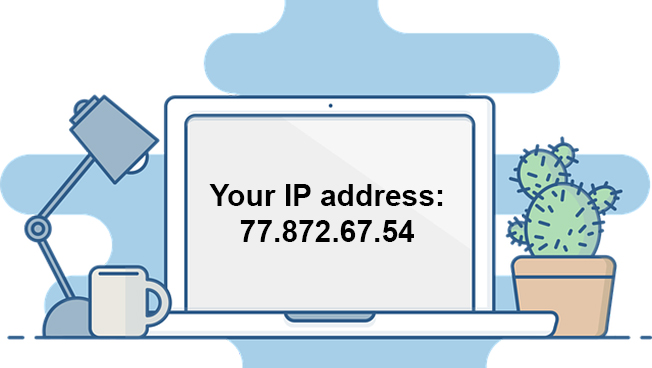

Once a network has been set up, the nodes can communicate among themselves. But
for proper communication, the nodes should be uniquely identifiable. If a node X sends
some information for node Y on a network, then it is mandatory that nodes X and Y are
uniquely identifiable on the network. Let us see how this is achieved.Each NIC has a
universally unique address assigned to it by its manufacturer. This address is known as
the MAC (Media Access Control) address of the card. It means that a machine with an
NIC can be identified uniquely through its NIC's MAC address. The MAC address of an
NIC is permanent and does not change.
MAC addresses are 12-digit hexadecimal (or 48 bit) numbers. By convention, MAC
addresses are usually written in one of the following two formats:
MM:MM:MM:SS:SS:SS
MM-MM-MM-SS-SS-SS
The first half (MM:MM:MM) of a MAC address contains the ID number of the adapter
manufacturer. The second half (SS:SS:SS) of a MAC address represents the serial
number assigned to the adapter (NIC) by its manufacturer.
For example, in the following MAC address,
00:A0:C9 : 14:C8:35
The prefix 00:A0:C9 indicates that the manufacturer is Intel Corporation. And the last
three numbers 14:C8:35 are given by the manufacturer (Intel in this example) to this
NIC.
Every machine in a network has another unique identifying number, called its IP
Address. An IP address is a group of four bytes (or 32 bits) each of which can be a
number from 0 to 255. A typical IP address looks like this:
59.177.134.72

To make it easier for us to remember, IP addresses are normally expressed in decimal
format as a "dotted decimal number" like the one above.
On a network, the IP address of a machine, and not the MAC address of its NIC, is used
to identify it. Do you recall IP protocol? IP protocol identifies a machine with its IP
address to route the packets.
MAC address is used only when a specific machine is to be targeted. For example,
suppose we want to block a specific PC to access some network resource. If we use the
PCs IP address, then the PC is not blocked permanently as its IP address may change
when it connects to the network next time. Instead, if the PCs MAC address is used for
the purpose, then the job is done!
An IP (Internet Protocol) address is a unique 4 digit hexadecimal number assigned to
each node on a network. IP address settings of a node can be changed by the user You
might wonder how an IP address differs from a MAC address. In fact, the IP address is
assigned by the network administrator or the internet service provider while the MAC
address is assigned by the manufacturer. Thus if a computer is transferred from one
network to another, its IP address gets changed whereas the MAC address remains the
same. From the IP address it is usually possible to track the tentative location of the
computer but this is not the case with a MAC address.
So, whenever we have to communicate with a computer on the internet, we can do so
by using its IP address. But it is practically impossible for a person to remember the IP
addresses of all the computers one may have to communicate with. Therefore, a
system has been developed which assigns names to some computers (web servers)
and maintains a database of these names and corresponding IP addresses. These
names are called Domain Names. Examples of some domain names are cbse.nic.in,
sikkimipr.org, indianrailway.gov.in etc. Domain names are used in URLs to identify
particular Web servers. For example, in the URL http://www.cbse.nic.in/welcome.htm,
the domain name is www.cbse.nic.in.
A domain name usually has more than one parts: top level domain name or primary
domain name and sub-domain name(s).
For example, in the domain name , in is the
primary domain name; nic is the sub-domain of in; cbse is the sub-domain of nic.There
are only a limited number of top level domains, and these are divided into two
categories: Generic Domain Names and Country-Specific Domain Names.
For example
Generic Domain Names:
·com - commercial business
·edu - Educational institutions
·gov - Government agencies
·mil - Military
·net - Network organizations
·org - Organizations (nonprofit)
Country Specific Domain Names:
.in - India
·au - Australia
·ca - Canada
.ch - China
.nz - New Zealand
.pk - Pakistan
.jp - Japan
.us - United States of America
Domain Name Resolution is the process of getting the corresponding IP address from domain name. It happens as follows: Suppose you mention a URL in the web-browser to visit a website. The browser first checks your computer to find if the IP address of the server corresponding to the Domain Name (embedded in the URL) is present. If this address is present then with the help of this address, the corresponding server is contacted and then the website opens in your browser. Otherwise the browser sends this domain name to some specific servers (called domain name servers) to find the corresponding IP address. Once the IP address is known, the server is contacted and then the website opens in your browser.